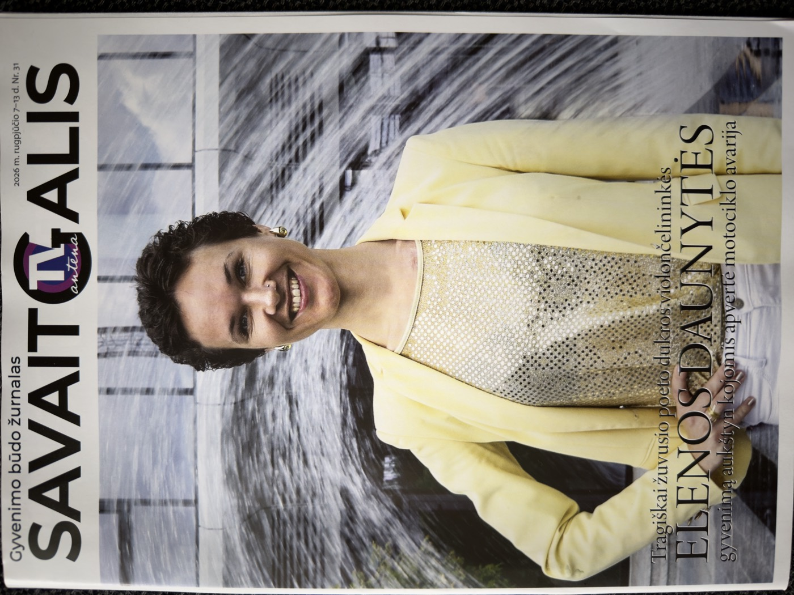
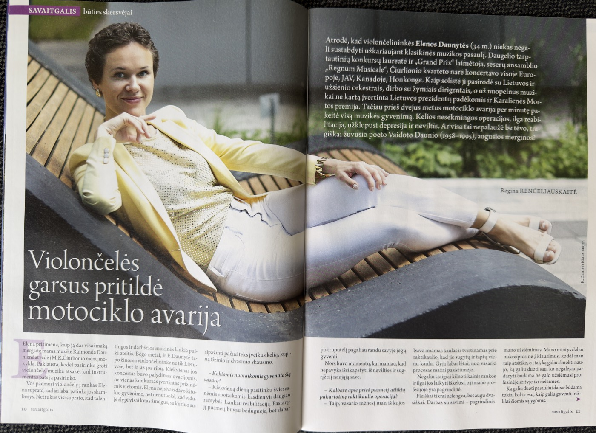
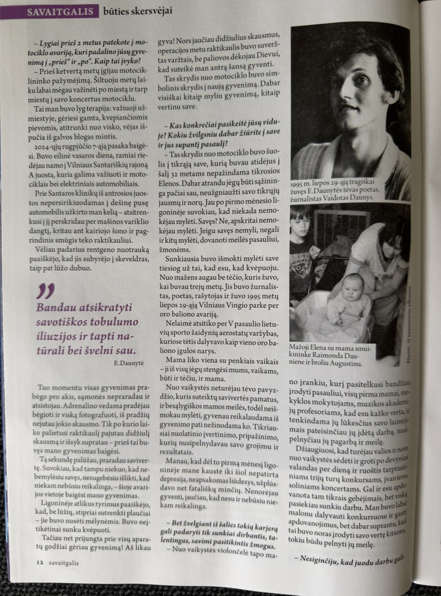
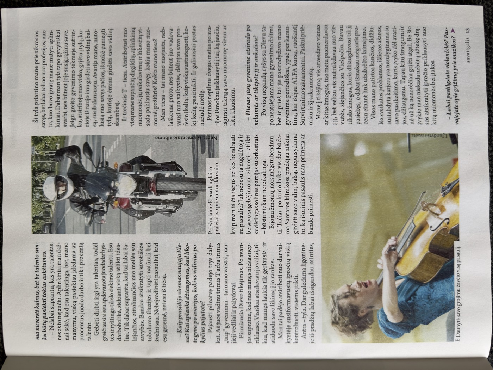
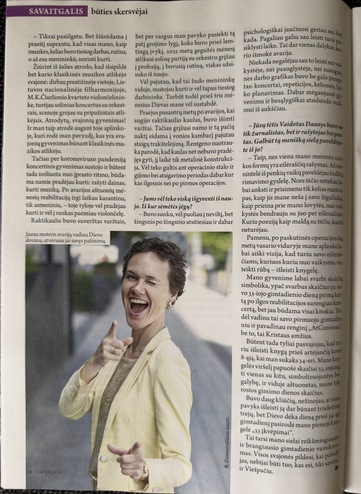
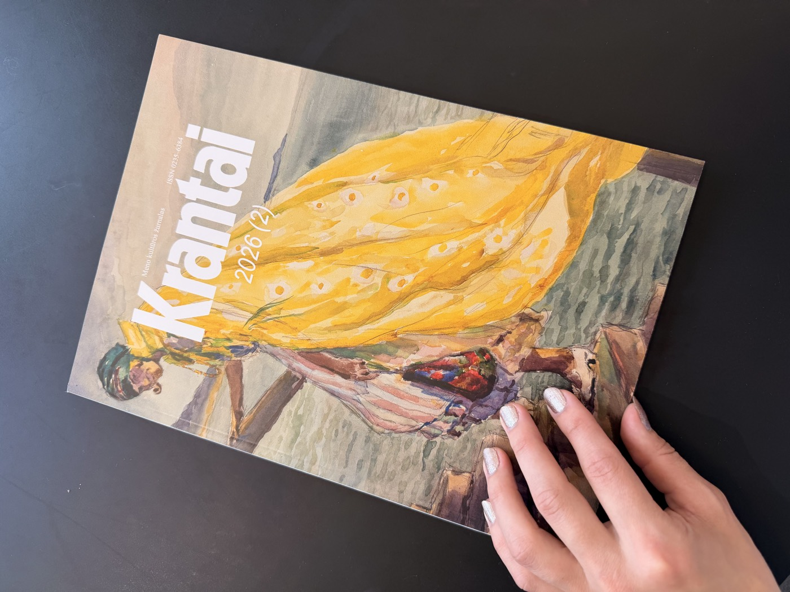
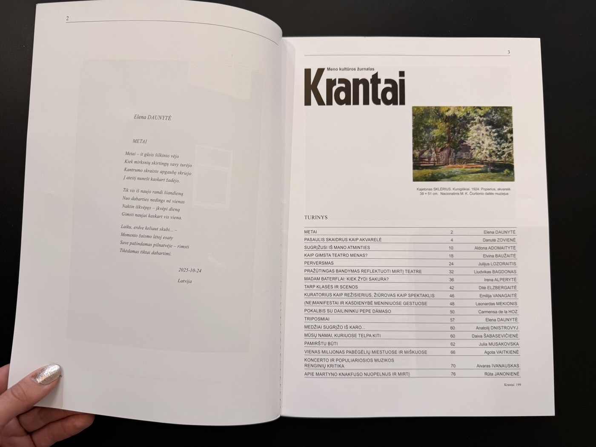
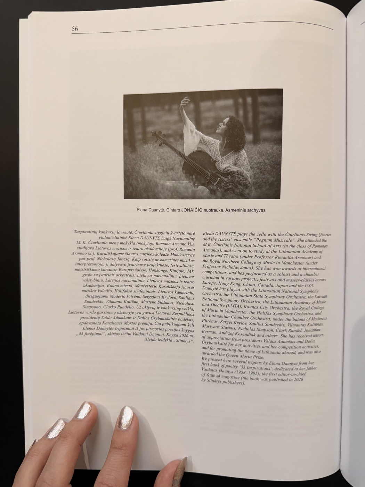
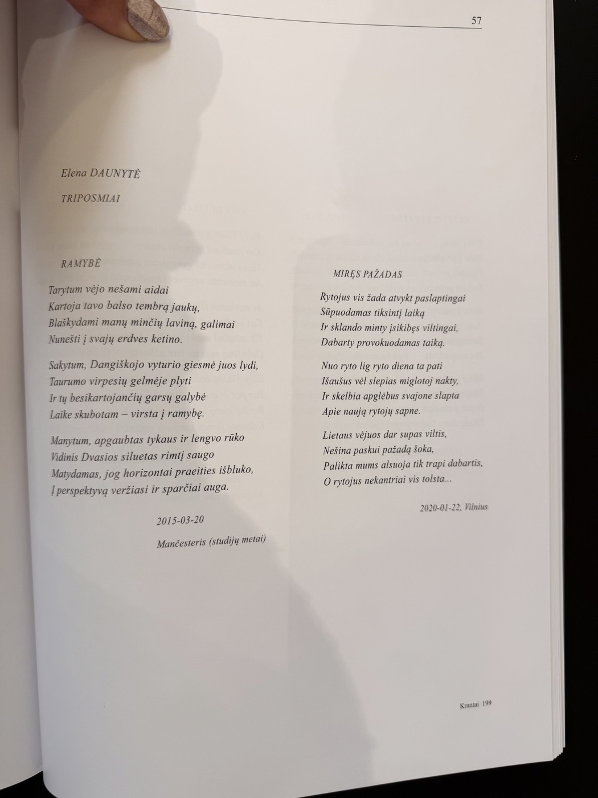
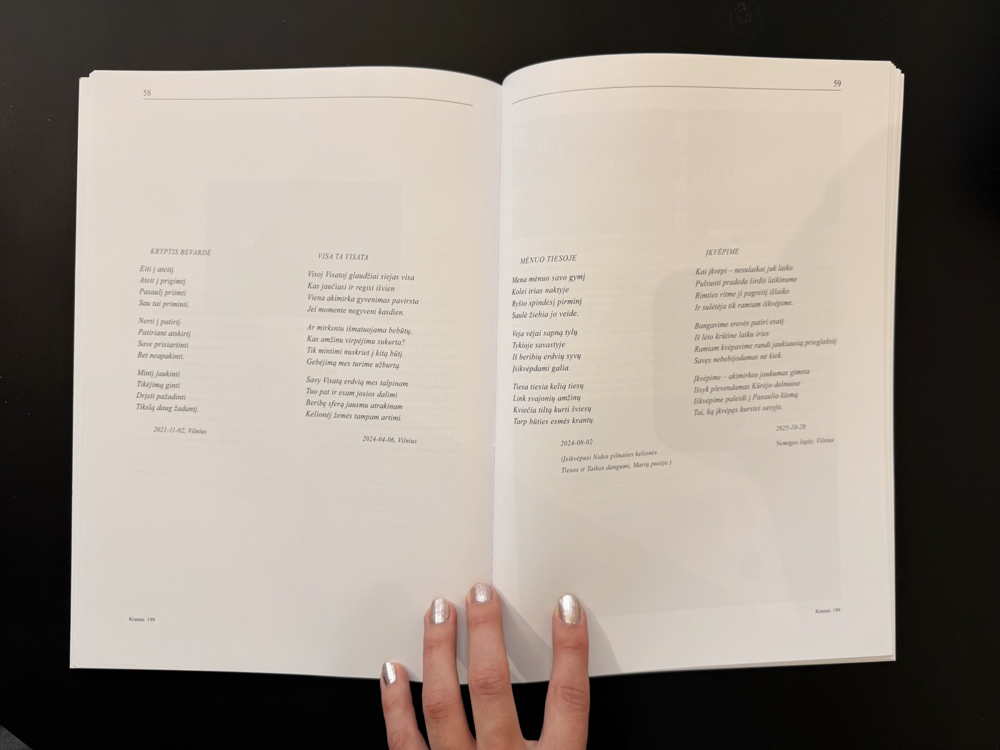

Elena Daunytė
Cellistin und Sängerin
Litauische Cellistin und Sängerin, die den Namen ihres Landes durch Europa und darüber hinaus trägt — Preisträgerin zahlreicher internationaler Wettbewerbe und Grand-Prix-Gewinnerin, Mitglied des Ensembles „Regnum Musicale“ und Musikerin, bei der Klassik auf Improvisation trifft.

Über mich
Musik als Weg, nicht als Ziel
Mehr lesenSchließen
Musik als Weg, nicht als Ziel
Elena Daunytė ist Preisträgerin zahlreicher internationaler Wettbewerbe und Grand-Prix-Gewinnerin, seit 2021 Cellistin des Čiurlionis-Quartetts der Litauischen Nationalphilharmonie und Mitglied des Familienensembles „Regnum Musicale“. Seit 2023 unterrichtet sie an der Litauischen Musik- und Theaterakademie die Klassen für Streichquartett und Kammermusik. Als Solistin und Kammermusikerin ist sie bei Wettbewerben, Festivals und Meisterkursen aufgetreten, deren Geografie von Lettland, Deutschland, der Schweiz, Kroatien, Russland, Österreich, den Niederlanden, Italien, Spanien, Ungarn und dem Vereinigten Königreich bis nach Hongkong, Shanghai und in die USA reicht.
Als Solistin hat sie mit dem Litauischen Kammerorchester, dem Litauischen Nationalen Sinfonieorchester, dem Litauischen Staatlichen Sinfonieorchester, den Orchestern von Riga, Kaunas und der Litauischen Musik- und Theaterakademie sowie den Orchestern des Royal College of Music und Halifax gespielt, unter der Leitung von Andrzej Kosendiak, Jonathan Berman, Modestas Pitrėnas, Sergei Krylov, Saulius Sondeckis, Vilmantas Kaliūnas, Martynas Staškus, Nicholas Simpson und Clark Rundell.
Sie wird regelmäßig eingeladen, solistische Cellopartien bei den Festivals „Vilnius“ und „Gaida“ gemeinsam mit dem Litauischen Kammerorchester und dem Litauischen Nationalen Sinfonieorchester zu spielen, und ihr künstlerischer Weg wurde von der S.-Karosas-Stiftung, dem Fonds zur Förderung von Musikern, Rotary International sowie den Rotary-Clubs Perkūnas und Vilnius unterstützt, in Zusammenarbeit mit dem Litauischen Kulturrat.
Seit mehreren Jahren studiert Elena zudem Gesang bei Professor Vladimir Prudnikov und nimmt vokale Werke in ihre Konzertprogramme auf. Sie experimentiert mit der Verbindung von Cello und Stimme und sucht nach neuen Klangfarben und Möglichkeiten, die beiden Instrumente miteinander zu verschmelzen.
„Am wichtigsten sind Wachstum und die tiefste Freude, die im Prozess der Verbesserung selbst liegt.“
Werdegang
Ausbildung und Entwicklung
Mehr lesenSchließen
Ausbildung und Entwicklung
-
M.-K.-Čiurlionis-Kunstschule
Das Fundament ihrer musikalischen Ausbildung — die Grundlage, auf der eine internationale Karriere entstand.
-
Royal Northern College of Music
Studium an einer der angesehensten Musikakademien Europas.
-
Litauische Musik- und Theaterakademie
Fortgeschrittenes Cellostudium in Vilnius, aktive Vertretung der Akademie bei nationalen und internationalen Veranstaltungen.
-
Meisterkurse
Stetige Weiterentwicklung an der Seite weltbekannter Cellisten.
Eigene Musik
„Laisvės glėby“ (In der Umarmung der Freiheit) · Musikvideo · eigenes Werk für Stimme und Cello · Bezdonys, 2020

„Ryto ugnis“ (Morgenfeuer) · Musikvideo · eigenes Werk für Stimme und Cello · Burgberg Buivydai · LRT · KLIPVID 2021
Solistin mit Orchester
Solistin Elena Daunytė · Dirigent Andrzej Kosendiak (Polen) · Litauisches Kammerorchester · Litauische Nationalphilharmonie, 2022
Solistin Elena Daunytė · Dirigent Jonathan Berman (Vereinigtes Königreich) · Litauisches Nationales Sinfonieorchester · Litauische Nationalphilharmonie, 2023

Elena Daunytė (Cello) · Kammerorchester Šiauliai „Camerata Solaris“ (künstlerischer Leiter und Dirigent Vilhelmas Čepinskis) · Gutshof Paliesius, 2025 · LRT · (ab 34:25)
Gesang
Gioacchino Rossini · „Canzonetta Spagnuola (En medio a mis colores)“ · gesungen von Elena Daunytė · mit ihren Schwestern Joana Daunytė (Harfe) und Kotryna Ugnė Daunytė (Violine) · Rathaus Vilnius, 7. April 2024
Giedrius Kuprevičius · die Ballade „Vilniaus gatvelės“ (Gassen von Vilnius) für Cello, Stimme und Klavier, eigens für sie eingerichtet · Elena Daunytė (Cello und Stimme), Milda Umbrusevičiūtė (Klavier) · Preisträgerkonzert des Internationalen Nehama-Lifshitz-Gesangswettbewerbs · Rathaus Vilnius, 2022
Poesie
Įkvėpime
Kai įkvėpi – nesulaikai juk laiko
Pulsuoti pradeda širdis laikinume
Rimties ritme ji pagreitį išlaiko
Ir sulėtėja tik ramiam iškvėpime.
Bangavime srovės patiri esatį
Iš lėto krūtine laiku iries
Ramiam kvėpavime randi jaukiausią prieglobstį
Savęs nebebijodamas nė kiek.
Įkvėpime – akimirkos jaukumas gimsta
Išsyk plevendamas Kūrėjo delnuose
Iškvėpime paleidi į Pasaulio kismą
Tai, ką įkvėpęs kurstei savyje.
„33 įkvėpimai“ (33 Inspirationen) — Gedichtband in litauischer Sprache. Erschienen im Verlag Slinktys am 6. März 2026; Buchpräsentation am 8. März im Green Hall 2.
Gedichte in der Zeitschrift „Krantai“, 2026 (2), Juni.

Fotos von der BuchvorstellungSchließen


Fotos — Gintaras Jonaitis
„33 įkvėpimai“ (33 Atemzüge) · eine Erfahrung aus Poesie, Musik und bewusstem Atem · Elena Daunytė (Poesie), Ninah Sol (bewusster Atem) · Kulturzentrum „Agila“ in Nida, 2. Juli 2026
Über die VeranstaltungSchließen
Jedes Gedicht beginnt mit einem Einatmen.
„33 įkvėpimai“ ist eine Erfahrung, in der sich drei Wege begegnen, zu sich selbst zurückzukehren: das poetische Wort, die Musik und der bewusste Atem. Grundlage des Abends ist Elena Daunytės Buch „33 įkvėpimai“ — dreiunddreißig dreistrophige Gedichte, geboren aus Stille, aus Erlebtem und aus Wandlung.
Elena liest ihre eigenen Gedichte, während Ninah Sol die Atempraxis leitet und sanft und sicher dazu einlädt, den eigenen Atem zu spüren, langsamer zu werden und loszulassen. Ruhige, eigens gewählte Musik trägt die ganze Erfahrung. Man muss nichts können und nichts vorher lernen. Es genügt, sich zu setzen, die Augen zu schließen und sich von Wort, Klang und Atem tragen zu lassen. Der Atem wird zum Rhythmus, die Musik zum Halt und die Poesie zum Spiegel, in dem jede und jeder etwas Eigenes erkennen kann.
Es ist ein Raum, innezuhalten und zu bemerken, dass manchmal ein einziger bewusster Atemzug genügt, damit der Tag eine andere Farbe bekommt.
- Elena Daunytė — Poesie und Lesung
- Ninah Sol — bewusster Atem
Öffne dein Herz dem Strom der Zeit, des Atems, der Musik und des Wortes!
Gemeinsam
Ensembles und Zusammenarbeit
Mehr lesenSchließen
Ensembles und Zusammenarbeit
Regnum Musicale
Ein mit ihren Schwestern gegründetes Familienensemble, benannt nach der Kulturorganisation ihres Vaters — eine gemeinsame Emotion, ein Gefühlsflug auf der Bühne.
Festivals „Vilnius“ und „Gaida“
Regelmäßig eingeladen, solistische Cellopartien gemeinsam mit dem Litauischen Kammerorchester und dem Litauischen Nationalen Sinfonieorchester zu spielen.
Čiurlionis-Quartett
Eine kammermusikalische Partnerschaft, die klassisches Repertoire mit tiefer musikalischer Chemie verbindet.
Presseecho
In den Medien
Mehr lesenSchließen
In den Medien
-
„Ein Motorradunfall ließ das Cello verstummen“ Lietuvos rytas · „Savaitgalis“ · 7.–13. August 2026





„Lietuvos rytas“, Beilage „Savaitgalis“, Nr. 31, 7.–13. August 2026 · Interview von Regina Renčeliauskaitė · Fotos von R. Danisevičius und aus dem Familienalbum
-
Gedichtveröffentlichung Krantai · 2026 (2) · Juni





Die Zeitschrift „Krantai“, 2026 (2), Juni · das Gedicht „Metai“ und der Zyklus „Triposmiai“
- „Be kaukių“ (Ohne Masken) · Zweifel gehört untrennbar zum ganzen Weg einer Musikerin LRT Radioteka · 2023
- „Ein gegenseitiges Wunder schaffen“ · vor dem Konzert „Prancūzų muzikos šedevrai III“ Lietuvos muzikų sąjunga · 2023
- „Ein Strauß französischer Meisterwerke für das Publikum der Philharmonie“ Lrytas · 2023 · Kritik
- „Die Cellistin Elena Daunytė — eine Anhängerin des Extremen“ Žmonės.lt · 15min · 2022
- „Mit den Schwestern musizieren — eine gemeinsame Emotion und ein Flug des Gefühls“ Lietuvos muzikų sąjunga · 2020
- „Hätte ich einen Vater gehabt, wer weiß, ob die Musik oder die Literatur in den Hintergrund getreten wäre“ Lrytas · 2018
- „Eine begabte junge Cellistin schreibt jedes Prozent ihres Erfolgs der Aufrichtigkeit zu“ Bernardinai.lt · 2018
- Elena Daunytės Galerie — Fotos, Video und Audio Lietuvos muzikų sąjunga
Anerkennung
Auszeichnungen und Würdigungen
Mehr lesenSchließen
Auszeichnungen und Würdigungen
Elena ist Preisträgerin zahlreicher internationaler Wettbewerbe und Grand-Prix-Gewinnerin. Für ihr aktives Konzert- und Wettbewerbsschaffen, das den Namen Litauens im Ausland bekannt macht, hat sie wiederholt Anerkennungen der Präsidenten der Republik Litauen erhalten, und für ihre musikalischen Leistungen wurde ihr der Königin-Morta-Preis verliehen.
- Status einer Kunstschaffenden — verliehen am 20. Juni 2020 durch Beschluss des Kulturministers Mindaugas Kvietkauskas
- Grand Prix bei internationalen Cellowettbewerben
- Anerkennung von Präsident Valdas Adamkus für die Verbreitung des litauischen Namens in der Welt
- Anerkennung von Präsidentin Dalia Grybauskaitė für aktives künstlerisches Wirken
- Königin-Morta-Preis für musikalische Leistungen
- Preisträgerin zahlreicher internationaler Cellowettbewerbe
Fotogalerie

Foto — Gabrielius Jauniškis · Žalgiris-Arena, März 2017
Alle Fotos ansehenSchließen


Fotos — Gintaras Jonaitis, „Karantino provokacijos“ (Quarantäne-Provokationen), Frühjahr 2020

Foto — Gintaras Jonaitis, „Karantino provokacijos“ (Quarantäne-Provokationen), Juni 2020


Fotos — Dmitrijus Matvejevas · Litauische Nationalphilharmonie, 11. November 2023
Kontakt aufnehmen
Konzerte, gemeinsame Projekte oder Presseanfragen — ich freue mich immer über eine Nachricht.